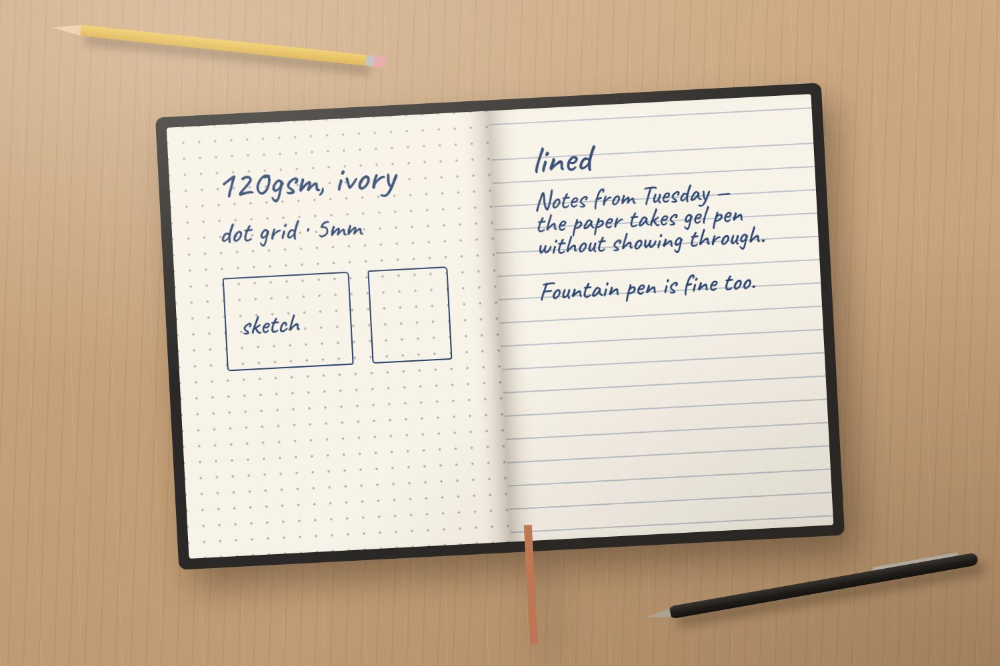
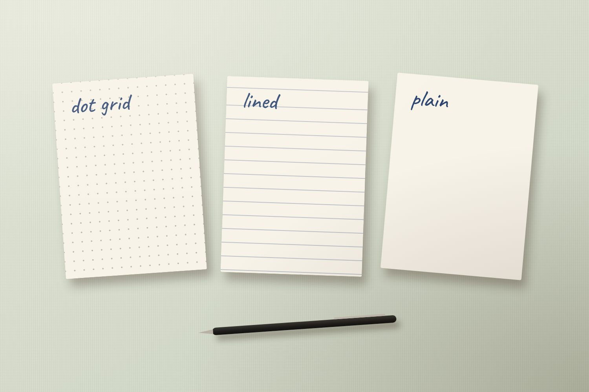

Notebook paper explained: gsm, dot grid, lined or plain

What the numbers on a paper notebook actually mean, and how to choose the right page for the way you write.
Two notebooks can look the same on a shelf and feel completely different the moment your pen touches the page. The difference is the paper. Here is what the numbers on a paper notebook mean, and how to choose notebook paper that suits the way you write.
What gsm means
GSM stands for grams per square metre: how much a sheet of that paper would weigh at one square metre. Higher numbers mean heavier, usually thicker paper.
- Around 80gsm: everyday printer paper. Fine for pencil and ballpoint, but most ink shows through.
- Around 100gsm: a step up. Gel pens and fineliners behave better.
- 120gsm and above: noticeably thicker. Less show-through, and more forgiving with fountain pens, highlighters and brush pens.
Heavier paper has one cost: the same number of pages makes a thicker, heavier notebook.
Show-through and bleed-through
Show-through, sometimes called ghosting, is when you can see writing from the other side of the page. Bleed-through is when ink soaks right through and marks the next page. Thicker, smoother paper reduces both. Test a new pen on the back page first.
Lined, dot grid or plain?
- Lined: rows for writing. Best for lecture notes, letters and long journal entries.
- Dot grid: a light grid of dots, usually 5mm apart. It keeps your writing straight but stays out of the way for diagrams, tables and bullet journal layouts.
- Plain: no guides at all. Best for sketching, mind maps and anyone who finds lines distracting.

Not sure? Dot grid is the most flexible of the three. You can write in it like a lined notebook and draw in it like a plain one.
White or ivory paper?
Bright white paper gives the sharpest contrast. Ivory, or cream, paper is warmer and feels softer under bright light. It is mostly a matter of taste.
Which paper for which pen
A notebook with paper that suits your pen saves a lot of frustration. As a rough guide:
| Pen | Paper that works |
|---|---|
| Pencil, ballpoint | Anything from 80gsm |
| Gel pen, fineliner | 100gsm and up |
| Fountain pen, highlighter, brush pen | 120gsm and up, and test the back page first |
Looking for loose notebook paper?
If you searched for notebook paper to refill a ring binder, we do not sell loose-leaf sheets. Everything we make is bound into a notebook.
The paper in our notebooks
Our A5 hardcover notebooks have 160 numbered pages of 120gsm ivory paper, in three rulings: dot grid (Iced Coffee, Arvo), lined (Street Food, Brekkie) and plain (Cuppa). Pocket Notes, our small spiral notebook, uses 100gsm paper with a 5mm dot grid.